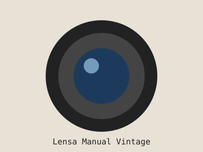

Apa Itu Lensa Manual Vintage?
Lensa manual vintage adalah lensa lawas era kamera film yang fokus dan bukaan diafragmanya diatur langsung dengan cincin di badan lensa. Dengan adapter, lensa ini bisa dipasang di kamera mirrorless modern.

Kenapa Layak Dicoba?
- Harga bekas relatif terjangkau dibanding lensa modern.
- Karakter gambar unik, seperti bokeh berputar dan flare lembut.
- Membuat kita lebih sadar saat memotret karena fokus manual.
- Bodinya terbuat dari logam sehingga terasa kokoh.
3 Langkah Memulai
- Cek mount lensa yang kamu incar.
- Beli adapter yang cocok dengan mount kameramu.
- Latihan fokus manual dengan fitur focus peaking.
Sejarah Singkat
Sebelum era 1980-an, hampir semua lensa kamera film difokuskan secara manual. Ketika autofocus mulai populer, banyak lensa manual berhenti dipakai dan akhirnya dijual murah sebagai barang bekas.
Memasuki era mirrorless pada 2010-an, jarak antara lensa dan sensor menjadi lebih pendek. Hal ini memungkinkan lensa lama dipasang lewat adapter sederhana, sehingga lensa vintage populer lagi, terutama di kalangan street photographer.
Istilah Penting
- Bokeh
- Tampilan area di luar fokus yang tampak lembut dan buram.
- Aperture
- Bukaan diafragma lensa. Angka f kecil berarti bukaan lebar dan lebih banyak cahaya masuk.
- Focus Peaking
- Fitur kamera yang menandai area tajam dengan warna saat kita memutar cincin fokus.
- Mount
- Jenis sambungan antara lensa dan kamera.
- Crop Factor
- Pengali yang mengubah focal length lensa pada sensor yang lebih kecil dari full frame.
Tips Membeli Lensa Bekas
Lensa vintage sudah berumur puluhan tahun, jadi periksa kondisinya dengan teliti sebelum membeli.
- Lihat bagian dalam lensa dengan senter, pastikan tidak ada jamur (fungus).
- Periksa apakah ada kabut (haze) atau goresan pada elemen kaca.
- Putar cincin fokus. Gerakannya harus halus dan tidak seret.
- Putar cincin bukaan dan pastikan bilah diafragma bergerak bersih, tidak berminyak.
- Pastikan mount-nya sesuai dengan adapter yang kamu punya.
Mulai dari Mana?
Baca panduan dan katalog lensa untuk mengenal pilihan lensa, lalu kirim pertanyaanmu lewat form konsultasi.